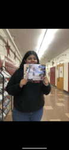
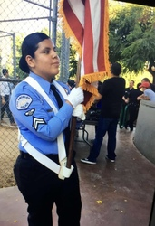
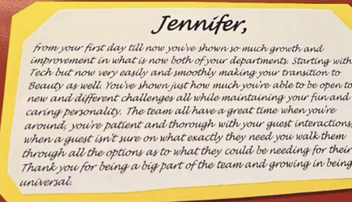
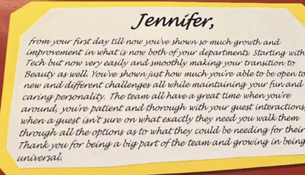
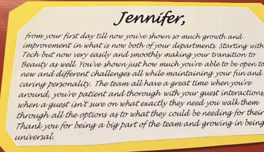

Jennifer Perez
Hello my name is Jennifer Perez. I am a 3rd year Anthropology student at University of California Riverside. As of right now I am looking into internships for Anthropology but underneath the subfield Forensics.As well as I would like to look into linguistics. These two are my favorite subfields of Anthropology. For being a 3rd year student I am on junior standing, I am taking more upper courses which are helping me develop my skills and understanding of Anthropology. Even throughout my first two years of UCR, I did take a handful of Anthropology classes, which I really did enjoy. The professors I have had so far are excellent and felt that they did care about my future.I really do feel like this is something that I am meant to pursue and I 100% want to.
Not only do I do school full time but I am also a full time worker at Target. I work under two departments in the speciality sales areas. I have been with Target for about 1 year and 2 months and really enjoy it. I understand the importance of running a business and have been shown different analytics and what each little thing means. It is great to be able to really understand what I am supposed to do. I do now know the importance of RFID and the understanding of it, as well as auditing, BRLA, and about how each of these pieces can make or break a store.
Before attending UCR and becoming a full time worker for Target,. I would volunteer as much as I can. I was a part of a program called LAPD Cadets and became a sergeant in the program. I would volunteer at the Hollywood Bowl to help with parking, as well as we would go to the Dodger games to help and pass out the giveaways, for thanksgiving we would create a space for those who weren’t able to celebrate and pass out different food. As well as for Christmas we would give away toys and different needs for families. It was all for the community that I live in and grew up in.
Experience
Tech Consultant
• help guest navigate different electronics
• Push and Pull products for sales
• Cashier
Youth Squad
• Engage community
• Distribute different necessities for families in need
• work 3-11pm to bring community together with activites
• Help bring community together
Education
UC Riverside
Portfolio


 

